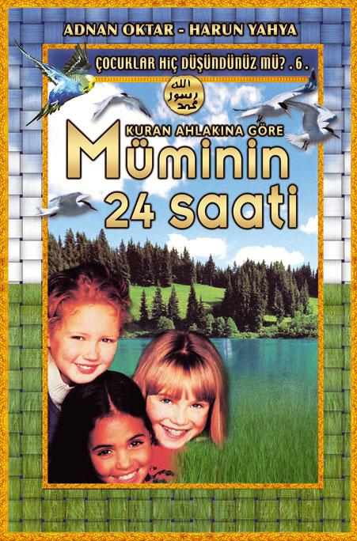
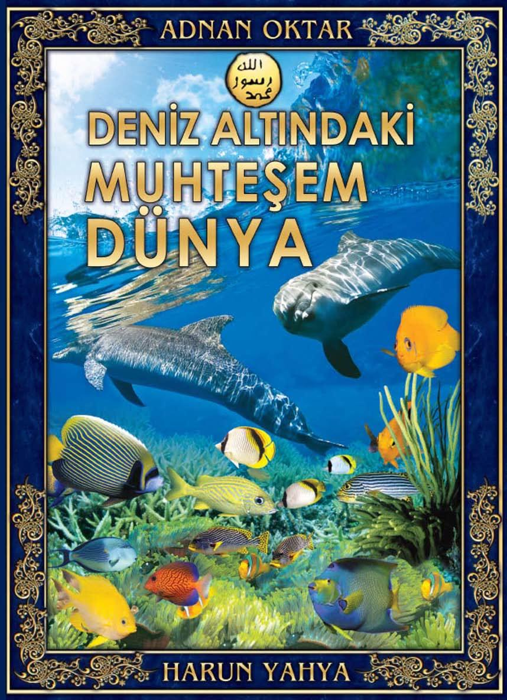

«
TR
EN
»


HARUN YAHYA
Hakkında
Kitap Listesi
SİTELER
TÜRKÇE
ENGLISH
DİĞER
İNGİLİZ DERİN DEVLETİNİN İÇ YÜZÜ 1
İNGİLİZ DERİN DEVLETİNİN İÇ YÜZÜ 2
This work is licensed under a
Atıf 4.0 Uluslararası (CC BY 4.0)
.